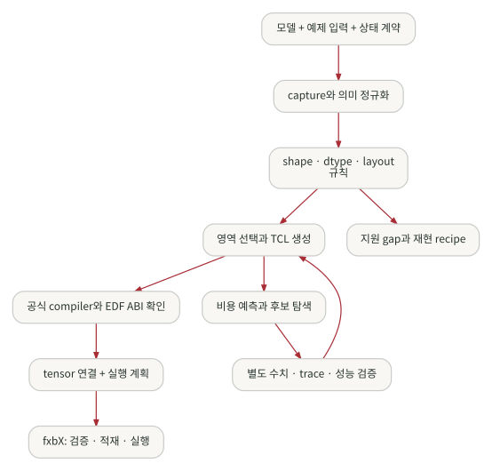

FuryNo5는 PyTorch 그래프의 의미를 해석해 재사용 가능한 TCL과 EDF, 실행 계획을 만드는 생산자이며, 아직 모든 ATen 연산을 구현한 범용 backend는 아니다. 프로젝트의 목표와 특정 입력에서 확인된 실행 증거를 분리해야 개발자가 어떤 부분을 확장해야 할지 알 수 있다. README도 전체 모델의 자동 이식 완료를 주장하지 않으며, 명시적으로 선택하는 실행 backend와 분석 코어를 구분한다. README권한 필요
코드 기준
2026-11-19에 확인한smallstep-zzz/FuryNo5의 commitbba9efea8201aec48150514a35d0b637d29d107e. 저장소는 조사 당시 비공개였다. 아래 함수·스니펫은 이 소스의 동작을 설명하며, 모든 경로를 이번 집필에서 NPU로 재검증한 것은 아니다.
프로젝트를 세 부분으로 읽자
| 부분 | 입력 | 결과 | 보장하지 않는 것 |
|---|---|---|---|
| 분석·탐색 코어 | 연산 DAG(Directed Acyclic Graph), 자원·메모리 모델, 비용 근거 | 합법성 검사, 후보 순위, 예측 보고서 | 실제 RNGD instruction 실행·전체 물리 비용 정확도 |
| 모델 생산 경로 | frozen PyTorch 모델, 예제 입력, 선택적 상태 계약 | TCL, genuine EDF, 명시적 실행 계획, 패키지 | 생성만으로 전체 모델 수치·성능 승인 |
| 명시적 실행 연결 | 준비된 callable 또는 검증된 계획·산출물 | SDK 실행, fxbX 소비 | forward 중 무제한 탐색·자동 CPU 모델 폴백 |
분석 코어에서 합성 자원 충돌을 줄여 예측 시간이 절반이 되더라도 실기기 속도가 두 배가 된 것은 아니다. 반대로 실행 경로가 genuine EDF를 만들었다고 시뮬레이터의 비용 예측까지 검증된 것은 아니다. 각 결과의 hardware_measured, source_kind, 환경 지문을 함께 읽는다. 설계권한 필요 · IR(Intermediate Representation) 정의권한 필요

그림의 구조 보기
flowchart TB
A["모델 + 예제 입력 + 상태 계약"] --> B["capture와 의미 정규화"]
B --> C["shape · dtype · layout 규칙"]
C --> D["영역 선택과 TCL 생성"]
D --> E["공식 compiler와 EDF ABI 확인"]
E --> F["tensor 연결 + 실행 계획"]
F --> G["fxbX: 검증 · 적재 · 실행"]
C --> H["지원 gap과 재현 recipe"]
D --> I["비용 예측과 후보 탐색"]
I --> J["별도 수치 · trace · 성능 검증"]
J --> D그림에서 fxbX의 역할은 준비된 계약을 소비하는 것이다. FuryNo5가 누락된 연산 규칙을 정의하고 컴파일하므로, fxbX 실행 중 다시 생산자를 불러 미지원 연산을 고치는 구조로 설명하면 안 된다. Native 실행 책임권한 필요
이름과 import 경로
제품명은 FuryNo5다. 과거 TCLMachine과의 호환 때문에 배포 패키지와 내부 폴더에 tplmachine, 공개 facade에 tclmachine이 남아 있다. 이것은 문서에서 다른 프로젝트를 의미하는 것이 아니다. 코드 예제를 실제로 실행하려면 현재 존재하는 import 경로를 그대로 써야 한다. 공개 facade권한 필요
공개 진입점의 중요한 차이는 다음과 같다.
| API | 사용하는 때 | 현재 성격 |
|---|---|---|
tclmachine.optimize |
작은 정적 BF16(BFloat16) 수축 그래프를 명시적으로 준비 | 제한된 opt-in custom op 경로 |
tclmachine.export_model |
모델 그래프를 파일로 생산 | 다중 EDF·tensor 연결·상태 계약 |
tclmachine.export_program |
이름 있는 여러 entry를 하나의 프로그램으로 생산 | 공유 불변 가중치와 명시적 상태 |
tclmachine.build_verified_model |
파일 생성 뒤 독립 소비자 검증까지 요구 | 변경 입력·CPU 기준·공식 trace·새 프로세스 replay |
tclmachine.load_plan |
실측 후 확정한 선택을 실행 | sealed decision만 소비 |
tclmachine.plan_regions |
비용 근거로 영역 조합 탐색 | 실행 승인이 아닌 offline 제안 |
tclmachine.prepare_model_direct |
공개 SDK 컴파일 경로를 직접 활용 | 별도 직접/분할 실행 경로 |
export_model이 더 많은 의미 계열을 처리한다고 해서 optimize의 등록 범위가 자동으로 늘지는 않는다. 어떤 경로를 고쳤는지를 PR(Pull Request)과 문서에 반드시 적는다.
개발자가 따라갈 파일 지도
아래 순서는 읽기 순서이기도 하다. 각 파일의 실제 위치는 고정 commit 링크에서 확인할 수 있다.
| 파일과 주요 진입점 | 책임 | 여기서 풀어야 할 질문 |
|---|---|---|
| tclmachine/init.py권한 필요 | 공개 호출 경계 | 사용자가 어떤 작업을 명시적으로 요청했는가 |
| graph_capture.py · capture_for_export권한 필요 | export·정규화 | 원본 의미가 보존되었는가 |
| edf_export.py · bind_exported권한 필요 | 입력·가중치·출력 바인딩 | 어떤 값이 어느 ABI(Application Binary Interface) 인수인가 |
| aten.py · plan_aten_call권한 필요 | 제한된 수축 후보 규칙 | 정적 shape·dtype·stride 계약에 맞는가 |
| pointwise_rules.py권한 필요 | 원소별 의미·broadcasting·TCL | 같은 의미 계열을 공통으로 해결하는가 |
| reduction_rules.py권한 필요 | 축약 축·출력 형식 | 어느 축을 줄이고 무엇으로 누산하는가 |
| compiler_registry.py권한 필요 | 의미 계열→컴파일 함수·소스 의존성 | 어떤 변경이 캐시를 무효화하는가 |
| execution_plan.py · export_model권한 필요 | 영역·컴파일 작업·계획 조립 | 값과 EDF를 어떤 순서로 연결하는가 |
| tcl_compiler.py · compile_source권한 필요 | 공식 컴파일·캐시·EDF 계약 | 산출물이 정확한 source/SDK와 일치하는가 |
| compile_job.py권한 필요 | subprocess·시간제한·실패 증거 | compiler 거절과 환경 종료를 구분했는가 |
| aten_runtime.py권한 필요 | 준비된 custom op 등록·복사한 FX graph 수정 | 실행 때 준비되지 않은 계약을 거부하는가 |
| verified_build.py / verified_worker.py권한 필요 | 생산자와 독립된 소비자 검증 | 컴파일 없이 다시 로드되어 올바르게 실행되는가 |
첫 단계: 후보 생성은 실행이 아니다
aten.py의 현재 RULES에는 mm, bmm, matmul, linear의 제한된 수축 후보가 들어 있다. 동일 파일은 BF16, 정적 양의 shape, 지원 rank, contiguous stride, 정확한 축 크기를 검사한다. 규칙이 맞으면 AtenCandidate에 의미·입출력·TCL source를 담는다. 파일 상단도 이것이 하드웨어 지원 인증표가 아니라고 명시한다. 실제 규칙권한 필요
# SDK/NPU를 건드리지 않고 후보와 차단 이유를 읽는 예제.
import torch
from tplmachine.aten import plan_exported
class Product(torch.nn.Module):
def forward(self, a, b):
return torch.mm(a, b)
a = torch.randn(4, 8, dtype=torch.bfloat16)
b = torch.randn(8, 6, dtype=torch.bfloat16)
ep = torch.export.export(Product().eval(), (a, b), strict=False)
report = plan_exported(ep)
print(report["candidate_count"])
print(report["npu_execution"]) # not_run
print(report["full_graph_executable"]) # False
여기에서 실패했다고 다중 EDF producer 전체가 같은 연산을 처리하지 못한다고 단정하지 않는다. execution_plan.py는 원소별·축약·layout·공간 연산 등 다른 의미 계열 생성기도 사용한다. 반대로 후보 source가 생겨도 컴파일 성공, ABI 일치, 수치 통과는 아직 남아 있다.
두 번째 단계: 준비한 그래프만 dispatch한다
register_prepared의 핵심은 기존 aten 전역 구현을 덮어쓰지 않는 것이다. 새로운 tclmachine namespace에 이름이 고유한 연산을 만들고, 준비된 실행 함수를 PrivateUse1에 연결한다.
# aten_runtime.py의 실제 핵심 발췌
library = torch.library.Library('tclmachine', 'FRAGMENT')
library.define(f'{name}({schema_args}) -> Tensor')
library.impl(name, implementation, 'PrivateUse1')
library.impl(name, meta, 'Meta')
그다음 optimize가 복사한 graph에서 해당 node의 target을 새 op로 바꾼다. 함수 호출을 준비하는 시점에는 커널을 컴파일하지만, PreparedGraph.__call__은 준비된 module만 호출한다. 같은 계약은 준비 중 cache로 공유하며, close하면 소유한 등록을 해제한다. 등록과 rewrite 구현권한 필요 · 준비 과정권한 필요
이 방식은 “일반적인 Torch의 모든 함수를 호출하기만 하면 FuryNo5가 자동 개입한다”와 다르다. 사용자가 지원 범위의 그래프에 optimize를 명시적으로 적용해야 한다.
세 번째 단계: 전체 파일을 생산하는 경로
export_model은 모델을 캡처하고, 입력·상태를 연결하고, 의미 규칙으로 영역을 정하고, 고유 커널만 컴파일한다. 성공하면 execution-plan.json과 패키지를 만들지만 반환 상태는 **built_not_runtime_validated**다. 이 이름 그대로 받아들이는 것이 중요하다. 결과 생성부권한 필요
# 호환 SDK와 FuryNo5/fxbX 설치본에서 실행할 생산 예제.
import torch
from tclmachine import export_model
def main():
model = torch.nn.Sequential(
torch.nn.Linear(8, 12),
torch.nn.ReLU(),
torch.nn.Linear(12, 8),
).bfloat16().eval().requires_grad_(False)
x = torch.randn(4, 8, dtype=torch.bfloat16)
result = export_model(
model, (x,), "tiny.fxbx",
compile_workers=2,
)
print(result["status"])
print(result["regions"], result["unique_kernels"])
print(result["timings_s"])
if __name__ == "__main__":
main()
이 예제는 .py 파일로 저장해 실행한다. 병렬 컴파일은 spawn으로 자식 프로세스를 만들 수 있으므로 __main__ 보호가 필요하다. 이미 출력 파일이나 .plan 디렉터리가 있는 경로를 덮어쓰지 않는다. 수정 후 비교 실험은 새로운 출력 경로를 쓴다. 생성된 파일을 검증하는 완전한 과정은 포팅 장에서 다룬다. 컴파일 작업 실행권한 필요
“모든 ATen 지원”을 어떻게 판단할 것인가
소스에 남은 2026-11-10 Core 기준선은 다음과 같다. 이 표는 현재 모든 코드의 최종 지원율이 아니라, 당시 동일한 분모와 증거 규칙으로 만든 상태표다. 후속 수정으로 성공한 사례를 이 표에 임의로 더하지 않는다.
| Core overload 상태 | 개수 | 올바른 해석 |
|---|---|---|
| 작은 그래프 NPU·수치 증거 있음 | 13 | 검증된 특정 입력 조건이 있음 |
| metadata 승인만 있음 | 7 | compiler·NPU·정확성 성공은 미확인 |
| 직접 규칙·계약 차단 관측 | 20 | 현재 producer의 조건/규칙에서 실패 |
| 미확인 | 145 | 관측·검증하지 않은 계약 |
| 역전파 전용 제외 | 7 | 프로젝트의 추론 범위 밖 |
| 합계 | 192 | 고정 Core overload 목록 |
13개 중 6개는 다른 입력 조건에서는 실패도 관측되었다. 이 사실은 모순이 아니다. 연산 이름 하나가 아니라 overload × shape × dtype × stride × 속성 × 상태 × SDK가 지원 계약이기 때문이다. 예를 들어 contiguous BF16 행렬곱 성공은 비연속 FP32(Floating Point 32-bit) broadcast 행렬곱 성공을 보장하지 않는다. 기계식 coverage.json권한 필요
최신 지원 상태를 만들 때는 core_aten snapshot/report로 분모와 corpus를 고정하고, trace·수치·반복 실행이 있는 증거만 승계한다. 단순 metadata_admitted를 NPU 지원으로 승격하지 않는 코드가 이미 있다. 지원표 생성기권한 필요
새 연산을 추가할 때 지켜야 할 경계
가장 먼저 실패 이유를 모델 이름 대신 의미 계약으로 표현한다. “모델 A가 실패한다”를 “FP32의 비연속 마지막 축을 가진 reduction에서 출력 stride 계약이 없다”로 바꾸면 다른 모델에도 쓰이는 수정을 할 수 있다.
graph_capture에서 이미 의미가 틀렸는지 확인한다.- 바인딩·alias·layout 문제라면 그 경계를 고친다.
- 기존 의미 계열이 있으면 해당
*_rules.py의 허용 조건과 TCL 생성기를 확장한다. - 신규 계열일 때만
compiler_registry.py에 함수와 source 의존성을 등록한다. - 작은 정상·경계·거부 사례에서 CPU 의미, 컴파일 ABI, NPU 수치와 trace를 확인한다.
- 영향을 받은 모델만 다시 preflight하고, 마지막에 파일의 독립 소비자 replay를 수행한다.
이 순서는 현재 저장소의 수정 가이드와 맞춰 구성했다. 허용오차를 바꾸거나 모델명 예외로 통과시키면 지원 범위가 늘어난 것이 아니라 계약이 달라진 것이다. 수정 가이드권한 필요
출처
| 자료 | 확인 범위 |
|---|---|
| README권한 필요 | 목표·분석 코어·미구현 경계 |
| ATen 후보 규칙권한 필요 | 정적 BF16 수축 admission |
| 준비 실행 경로권한 필요 | custom namespace 등록과 forward 경계 |
| 계획 생성기권한 필요 | 다중 EDF·계획·생성 상태 |
| Core 지원 기준선권한 필요 | 과거 snapshot의 분모와 증거 단계 |
| 독립 소비자 검증권한 필요 | 생산자 import·재컴파일 차단·NPU trace |